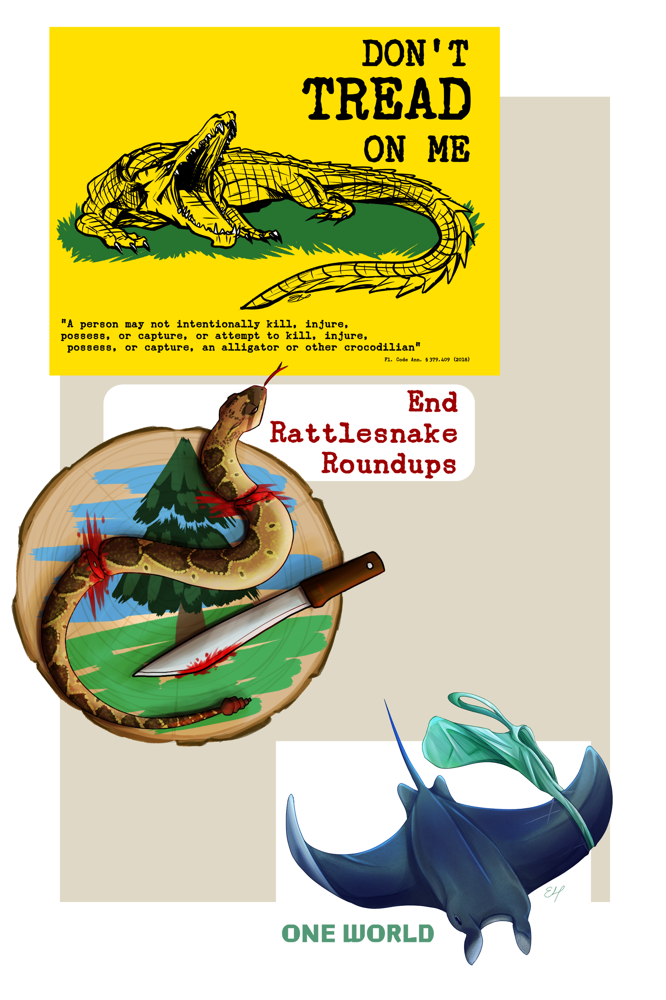

I run a YouTube channel under the name "Haasio" currently with 14 thousand subscribers. I post art and animations, sometimes under environmental or herpetological activism. I also post drawing tutorials so that people can create and improve their own art. In addition to my YouTube channel, I also have a DeviantArt account, where I do commission work and post studies and practices. I occasionally host art contests to spread awareness about Climate Change and inspire my audience to send a message though their artwork. I also occasionally host fundraising auctions, where a client pays for my art, and a portion of the payment gets donated to a cause (often environmental).
